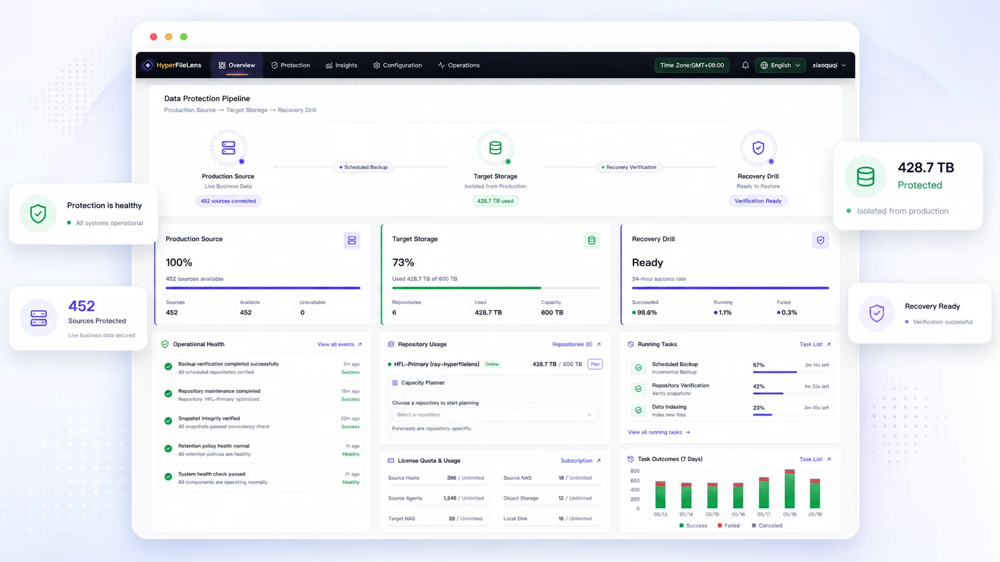

Try HyperFileLens
Try HyperFileLens Customer support Q&A
Answer customer questions straight from your product docs, PDFs, and slide decks — multimodal understanding reads across formats, so nothing needs to be reformatted first.
Ask questions straight from your document backups — PDFs, Word, Excel, PowerPoint, images, Markdown, or any other text format — without touching production.

Use Cases
Answer customer questions straight from your product docs, PDFs, and slide decks — multimodal understanding reads across formats, so nothing needs to be reformatted first.
Turn scattered specs, policies, and decisions — engineering or company-wide — into one knowledge base every team can actually query, not just search and summarize.
Not keyword matching, not log scraping — the agent reads and reasons through your real source code, the way a senior engineer would, until it can confirm the actual root cause.
Still a rock-solid backup tool
Windows, Linux, and Mac — servers and workstations alike — plus NAS shares, all protected under one policy, not three different tools.
Object storage or local storage, any S3-compatible provider — your backups aren't tied to one storage vendor.
Need one file back right now? Browse any snapshot and restore just that file in seconds — no full-volume restore required.
How It Works
HyperFileLens backs up your documents and code into a safe, isolated copy — then SourceLens, our open source Agentic RAG engine, reasons directly over that copy, never touching production.
![Your documents (Word, PDF, Excel, PowerPoint, images, code, markdown) flow into HyperFileLens for open source backup, protection, and flexible storage. HyperFileLens produces an isolated safe copy with no impact on production, which the SourceLens open source AI agent reasons over directly — reading, searching, navigating, and reasoning with no pre-built index — to produce AI insights: customer support Q&A, a company knowledge base, source-grounded root cause analysis, and actionable insights. The whole pipeline is governed and secure: access control, data stays in your control, audit and compliance, enterprise ready. Open source, Apache 2.0.](./assets/website-how-it-works.webp)
Pricing
Compare backup storage and AI Token allowances for Personal Edition.
No payment required
No payment required
$58.10 billed yearly
Save $11.62 vs. 12 monthly payments
Billed monthly
$192.30 billed yearly
Save $38.46 vs. 12 monthly payments
Billed monthly
$445.70 billed yearly
Save $89.14 vs. 12 monthly payments
Billed monthly
Prices are in USD and include applicable taxes. AI Token allowances reset monthly and do not roll over. Backup storage capacity applies to platform-managed repositories and does not reset monthly.
Community
Install the latest Community tag on an Ubuntu host with Docker. The installer verifies its images and assets before changing the host.
Community is free and open source, with S3-compatible storage and an AI model or API key. Enterprise capabilities will be available in a later release.
HyperFileLens is currently in public beta.
Run on an Ubuntu host
# Install the latest Community tag
$ curl -fsSL \
https://raw.githubusercontent.com/oneprolabs/hyperfilelens/main/deploy/online/install.sh \
| sudo bash -s -- --mirror global --yesBlog
From traditional RAG to a full agent — a real enterprise knowledge experiment we ran with SourceLens, an open-source project that skips the vector database entirely.
Kopia's dedup and encryption are solid, but its CLI runs on memorized flags and KopiaUI isn't much better — once something's backed up, it disappears into a black box. HyperFileLens builds its Agent directly on Kopia, collapses setup into a few clicks, and wires in an AI engine (SourceLens) that reads snapshots directly. A full hands-on walkthrough, from deployment to asking AI questions about your own backups.
From recovering data to rediscovering its value — the open-source HyperFileLens skips Embedding, Vector DB, and pre-indexing entirely, letting an agent search, read, and reason over raw files directly. It's already running in production across HyperBDR and AGIOne's global sales support, product support, and engineering analysis.
Contact
Planning a private, self-hosted deployment for your organization? We can help you scope it.
Email usRunning into an issue or found a bug? File it on GitHub and we'll take it from there.
Open an issue